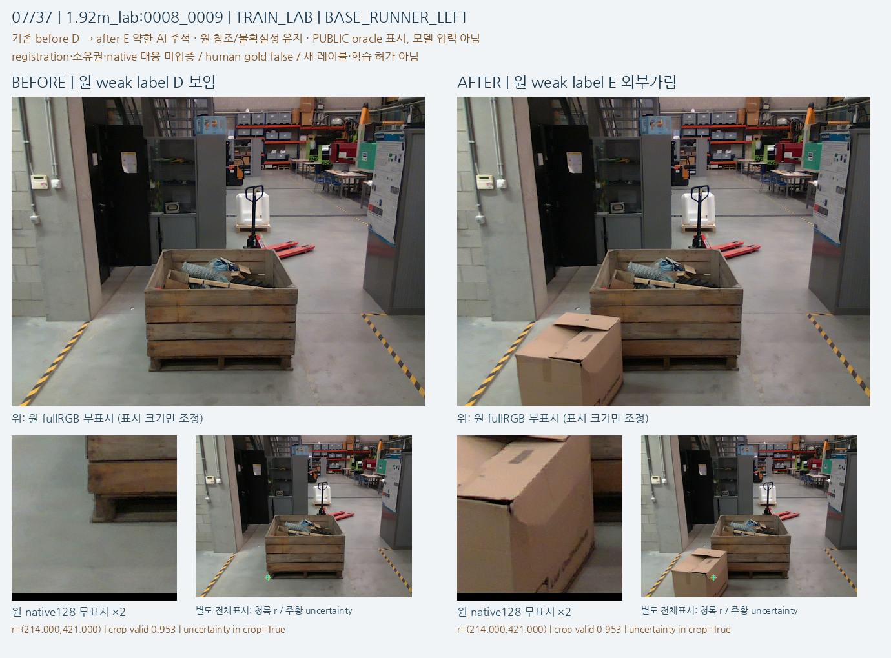
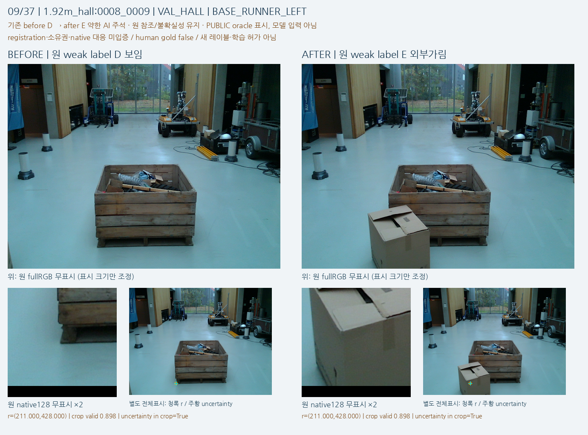
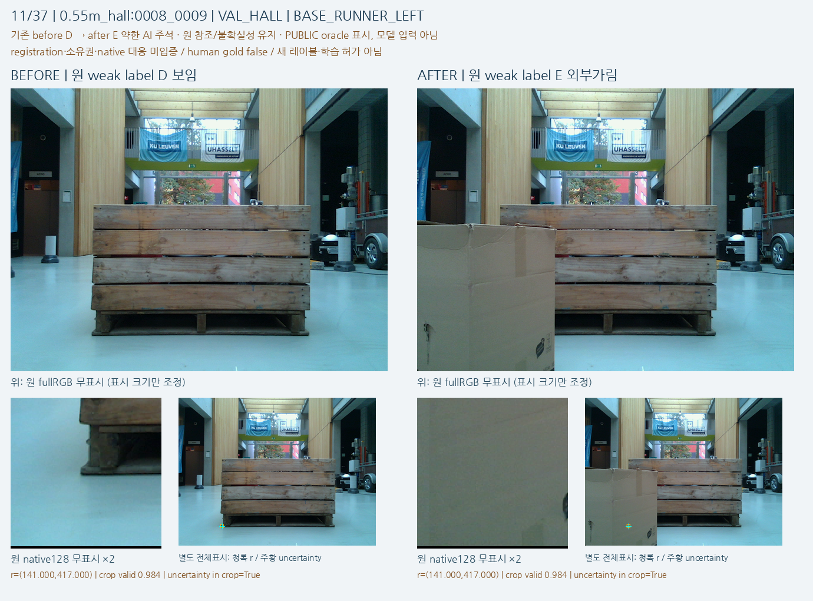
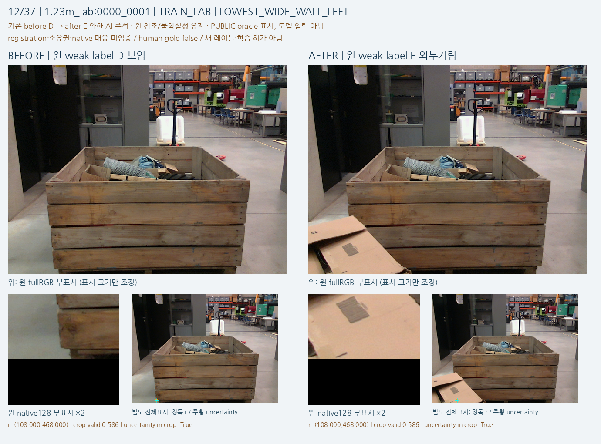
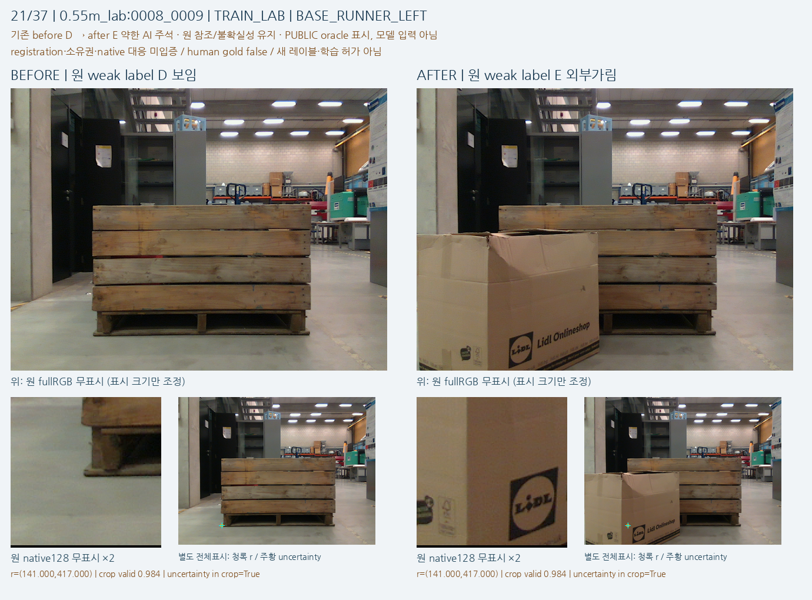
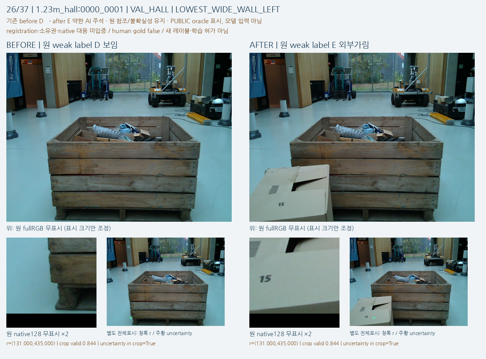
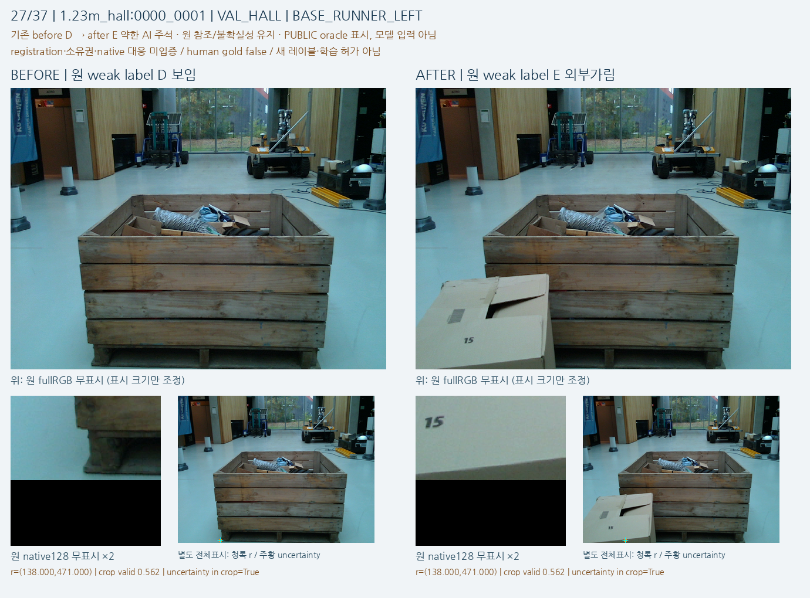
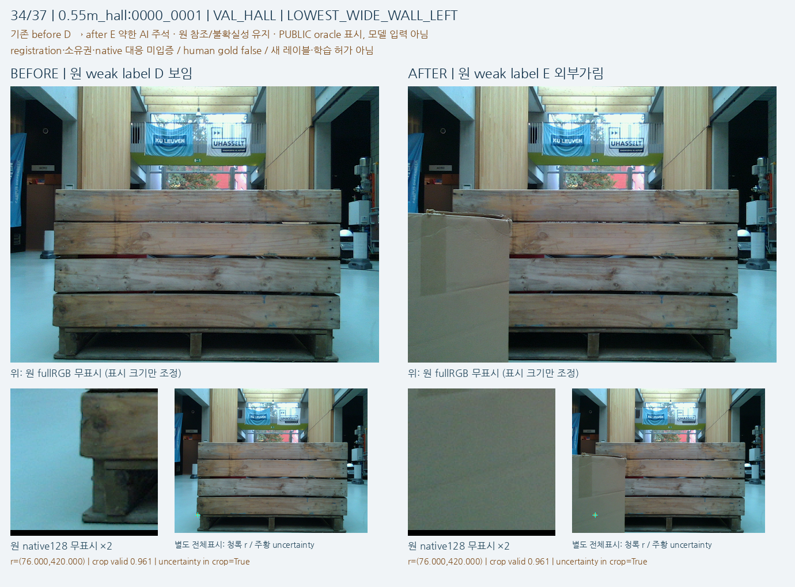
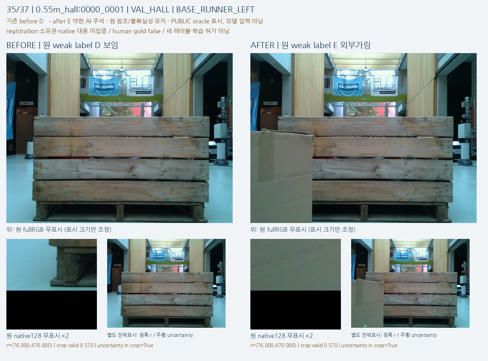
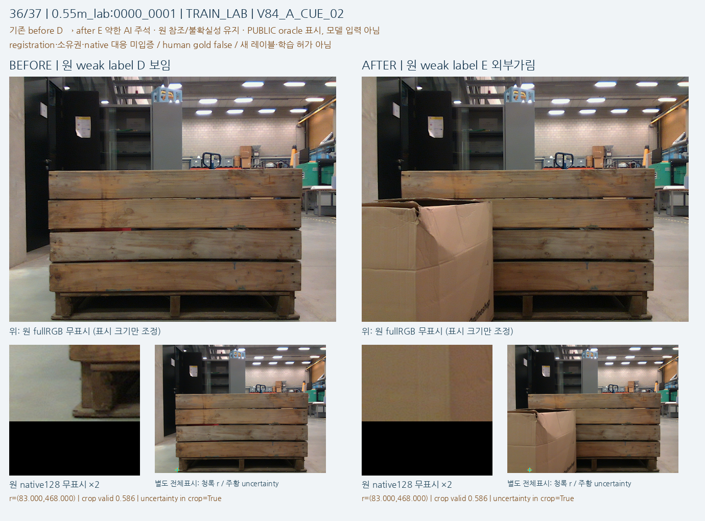

실제 before/after RGB의 원 순서·참조점·불확실성·기존 weak D/E를 그대로 보여 주는 source intake입니다. 학습·모델 평가·새 human/native gold 생성은 하지 않았습니다.
| 단서쌍 / 촬영쌍 / 원 RGB | 37 / 22 / 44 |
|---|---|
| 원 fold | TRAIN_LAB15 · VAL_HALL22 |
| 원 weak label | before D37 · after E37 (변경0) |
| 표시 | fullRGB 무표시 + 고정 native128 원 crop ×2 + 별도 참조/uncertainty 표시 |
| padding / 참조 OOB | 22/74창 부분 padding · 참조 OOB0 · uncertainty 초과0 |
37개는 독립37환경이 아닙니다. 같은 물리 bin, 왼쪽 구조 단서, 비슷한 상자가 반복됩니다. 원 lab/hall fold와 개발 노출 한계를 유지합니다.
연락판에서 가림 전에는 왼쪽 목재 벽/하부 runner의 모서리·결합부가 보이고, 가림 후에는 같은 고정 참조 부근에 실제 상자가 놓인 장면 변화를 볼 수 있습니다. 주변에 목재가 남는 것은 기대 구조 단서가 보인다는 뜻과 같지 않습니다.
이것은 기존 조건부 weak D/E 정의를 이해하기 위한 RGB 관찰입니다. 각 참조가 native8 기대 부품인지, 정확한 숨은 좌표인지, 불확실성의 모든 픽셀이 정말 가려졌는지에 대한 새 gold 판정은 아닙니다.
가까운 장면부터 멀리 보이는 장면까지 크기·시점이 달라, 동일128 native픽셀 창의 물리적 내용과 target 비율이 크게 바뀝니다. 일부 창에는 구조물·바닥·상자가 함께 들어갑니다.
이 oracle 창은 모델의 초기 q/L crop이나 동일 입력 연산자를 재현한 것이 아닙니다. 실제 초기 q8/L은 원 metadata에 그대로 남고 GT-bestslot/최근접 참조 연결은 만들지 않았습니다.
전체37 단서는22촬영쌍/44RGB에 묶이며, 같은 목재 bin의 왼쪽 단서와 유사한 cardboard 상자 가림이 반복됩니다.
37개의 독립 환경·개체 표본이나 다양한 자연 가림 재질의 검증으로 셀 수 없습니다. TRAIN/VAL은 원 lab/hall 개발 fold이며 물리 개체 독립성은 없습니다.
모든74 참조점과 전체 uncertainty bbox는 해당 고정128창 안에 있습니다. 다만22창(11쌍)은 영상 아래쪽 경계 등으로 일부 padding이 있고 최소valid비율은0.5625입니다.
검정 padding은 외부 물체나 가림 레이블이 아닙니다. 원본픽셀/valid를 보존하고 OOB/어려운 예시를 제외하지 않았습니다.
전체 배경/목재 윤곽은 before/after에서 유사하지만, 실제 촬영의 작은 이동·시차·노출 차이를 이 시각화로 배제할 수 없습니다.
동일 supplied transform이나 유지된 참조값이 exact pixel registration의 증명은 아닙니다. 정렬·워프·참조 이동·새 레이블 수정은 수행하지 않았습니다.
각 카드를 열면 원 fullRGB와 무표시128crop을 함께 볼 수 있습니다. 청록 참조/주황 uncertainty는 별도 전체표시 사본에만 그렸습니다. crop은 x0=floor(r.x)−63, y0=floor(r.y)−63의 원 native128픽셀 추출이며 r 값 자체는 바꾸지 않았습니다.










PUBLIC oracle 진단 전용. 원 native 대응 UNKNOWN/human gold false. 현재223/V112/encoder/head/fit/PnP 접근0. 새로운 source-query emulation 또는 학습 사용은 별도 prospective 계약이 필요합니다.